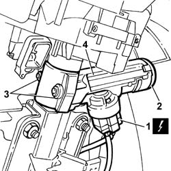

5520A12 IGNITION SWITCH ASSEMBLY - R R FOR VERSIONS WITH AIR BAG
- Path
- Procedures > 55 ELECTRICAL EQUIPMENT > 5520 ENGINE STARTING > 5520A IGNITION SWITCH > 5520A12 IGNITION SWITCH ASSEMBLY - R R FOR VERSIONS WITH AIR BAG
- Kind
- repair procedure (removal / refitting; the operation number is the code)
- Applies to
- all engines; all production periods
- Interactive page
- https://sloeber94.github.io/elrnDB-fDct/en/#/244001349
Applies to: all engines; all production periods
 Removing
Removing
 Refitting
Refitting- Disconnect the negative battery terminal.
Op. 7040A26 STEERING COLUMN TRIM - R+R
1. Disconnect the electrical connector on the switch.
 | Description | Connector |
|---|---|---|
1 | Ignition switch | H001A |
| Description | Connector |
|---|---|---|
. | Ignition switch | H001B |
2. Release the CODE aerial from the switch.
3. Undo the bolts fixing the switch to the steering control shaft support using the special equipment.
4. Remove the ignition switch

Applies to: all engines; all production periods
Refitting
Removing- Position the ignition switch and secure it tightening the fixing bolts until the hexagonal head breaks.
- Connect the electrical connectors for the ignition switch.
| Description | Connector |
|---|---|---|
. | Ignition switch | H001A |
| Description | Connector |
|---|---|---|
. | Ignition switch | H001B |
- Secure the immobilizer aerial to the switch.
Op. 7040A26 STEERING COLUMN TRIM - R+R
- Connect the negative battery terminal.
Topics linked from this page (1)
Topics that link to this page (15)
- B01 IGNITION SWITCH NOT WORKING
- B02 STARTER MOTOR NOT WORKING
- I01 SIDE LIGHTS/NO. PLATE LIGHTS NOT WORKING
- I02 PARKING LIGHTS NOT WORKING
- I03 NUMBER PLATE LIGHT NOT WORKING
- I05 DIPPED HEADLAMPS NOT WORKING
- I06 MAIN BEAM HEADLAMPS NOT WORKING
- I08 SIDE LIGHTS NOT WORKING
- I09 SIDE LIGHT (ONE) FRONT. OR REAR. - RH OR LH NOT WORKING
- I20 FOG LIGHTS NOT WORKING
- J20 REARSCREEN AND DOOR MIRROR DEFROSTING NOT WORKING
- J21 HEATED REAR WINDSCREEN NOT WORKING
- J22 DOOR MIRROR DEFROSTING NOT WORKING
- 3330D12 BRAKE SERVO - R R FOR RIGHT HAND DRIVE VERSIONS - INCLUDES SEPARATION FROM MASTER CYLINDER(PUMP)
- 4110A31 MOUNT WITH STEERING CONTROL SHAFTS - RR - INCLUDES RR STEERING WHEEL FOR VERSIONS WITH AIR BAG